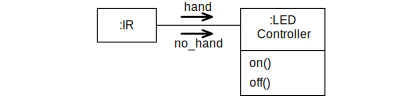

State Machines in Python
This week you are going to implement state machines in Python.
As a delivery you should keep a reflection document about your work where you include screen shots and your observations.
The running code is in itself a feedback if you got it right.
Installation
Make sure you have STMPY and Jupyter lab set up like in the preparation. In case you have troubles with Python:
- Use a limited amount of time to try fixing the installation.
- Share a working installation in you team, by sharing your screen.
- Run the Notebooks using Binder
- Fix your installation later
In case your notebook gets stuck, you can restart its Python kernel in the menu Kernel.
Today's Challenge
The tasks today are not particularly difficult, but a lot of details must come together to get it right.
Also, as code is involved, it may be difficult for everyone in the team to have exactly the same understanding at the same time. So, take some time to explain the code to each other.
Also, consider to repeat some parts of the assignment after the team activity on tour own.
Task 1: Traffic Light
- Look at the provided code of the traffic light, and run it.
- Create a state machine diagram by looking at the code.
- Create a copy of the diagram, but use more entry and exit actions on the states.
- Create another implementation of the traffic light state machine that uses more entry and exit actions in another cell and run it.
Task 2: Kitchen Timer
- Use the code provided for the simple use interface of the kitchen timer.
- Get the state machine diagram you built previously, and create it in STMPY.
- Run the state machine and validate if you are satisfied with how it works.
- Use a shorter timeout, like 4 seconds instead of 15 minutes.
Task 3: Head Lamp
You should design the state machine for the controller of a head lamp.
This headlamp is used for outdoor activities.
It has an infrared sensor attached, so that the LED can be switched on and off without fiddling with delicate buttons.
It’s enough to swipe the hand in front of the sensor and the LED turns off.
Another swipe turns the LED on again. However, to prevent the LED from turning off unintentionally, the swipe has to happen within a short time.
If the hand is in front of the IR sensor for more than one second, the gesture is ignored.
The communication diagram below shows the context of the controller.
It receives the signals hand and no_hand from the IR sensor, and it controls the LED with signals on and off.

State Machine Design
Design first a state machine diagram for the problem.
- Assume the controller starts in a state with the LED switched off and the IR sensor not detecting any hand.
- Use the action
on() and off() to control the lamp.
- Pay attention to the control state. Which situation does each of them represent? (In this example, you have only a few states. Meaningful names for them can make the task easier.)
- Can you use some form of symmetry in the diagram to get more confidence in the solution?
Implementation in Python
Create now from the state machine diagram a solution in Python using the STMPY patterns and libraries, like before.
- Start with the code provided in notebook Head Lamp
- The IR sensor is represented with a checkbox. When you select the checkbox, it symbolizes that the hand is in front of the sensor.
Debugging the State Machine
When running the implementation, does the state machine behave as intended? If not, what is the problem? Do you have to go back and also change the diagram, or is it more technical problems with the code? (Or a combination?)
Deliveries
Reflection Document about State Machine Implementation
- Write down your observations.
- Document the results.
- Pay especially attention on the process around the head lamp, and delivering it in a high-quality process.
- Deliver on Teams
Team Reflection
- As always, update your document about the team process and roles.
Individual Reflection